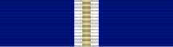

Article 5 NATO Medal (Operation Eagle Assist)
Service awardNATO
For NATO AWACS support over North America after Sept. 11, 2001.
Check your eligibility and build your ribbon rackHow you get it
You earn this by meeting the requirements. No recommendation is needed. If it's missing from your record, current members can have their MPF add it. Veterans can request it from AFPC with a Standard Form 180 and supporting documents.
You qualify if any of these apply
- Served aboard NATO Airborne Early Warning and Control aircraft deployed to North America for 30 days (continuous or accumulated), Oct. 12, 2001 to May 16, 2002
Quick facts
- Category
- Foreign and international
- Type
- Service award
- Authorized devices
- Bronze Service Star
- WAPS points
- 0
- Position in the AFPC listing
- 84 of 91 (listed in order of precedence)
Full AFPC fact sheet text
Background
The North Atlantic Treaty Organization Medal for Operation Eagle Assist was approved by the North Atlantic Council for members who participated in NATO's operation in the airspace of North America, following the attack on the United States on Sept. 11, 2001, providing NATO assistance to the United States and demonstrating the Alliance's resolve against terrorism. The operation began on Oct. 12, 2001 and was completed on May 16, 2002. The Deputy Secretary of Defense approved the acceptance and wear of the medal for U.S. military and US civilian personnel.
Criteria
Eligible personnel are those individuals who were in NATO Airborne Early Warning and Control aircraft deployed to the Area of Operation (USA and the airspace of North America as tasked by NORAD). The qualifying period in the Area of Operation is 30 days continuous or accumulated service between the dates of Oct. 12, 2001 and May 16, 2002. Aircrew members will accumulate one day's service for the first sortie flown of any day in the Area of Operation; additional sorties flown on the same day receive no further credit. This requirement exists for support as well as combat aircraft; support aircraft includes tanker, airlift and surveillance platforms.
Medal description
Members will wear the first NATO medal awarded, and will wear a bronze service star for any subsequent medal awarded for a different operation. Subsequent deployments in support of the same operation will not be awarded.
Ribbon description
Members are authorized to retain the ribbon clasp if presented; however the wearing of the ribbon clasp with the NATO Medal is not authorized for U.S. military members.
Authorized device
Bronze Service Star
Source: Article 5 NATO Medal (Operation Eagle Assist) fact sheet, Air Force's Personnel Center